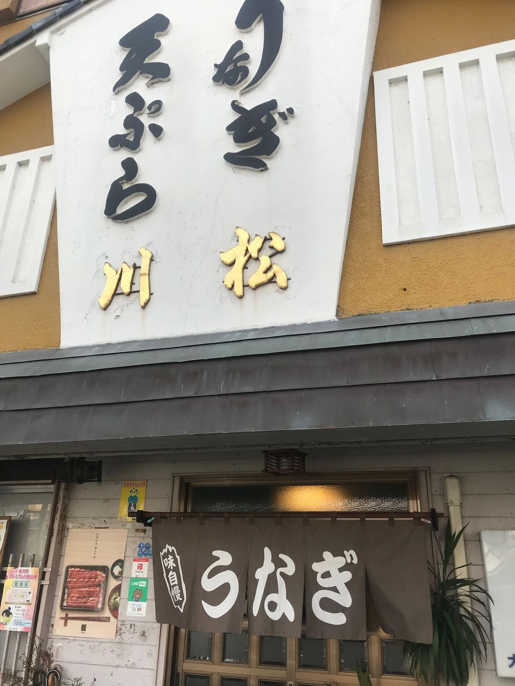
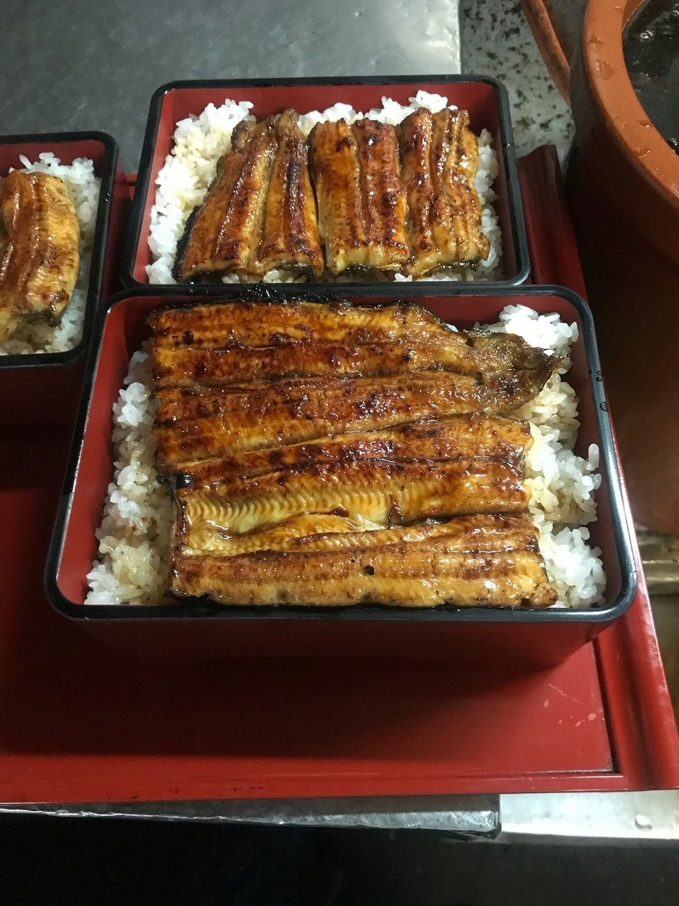
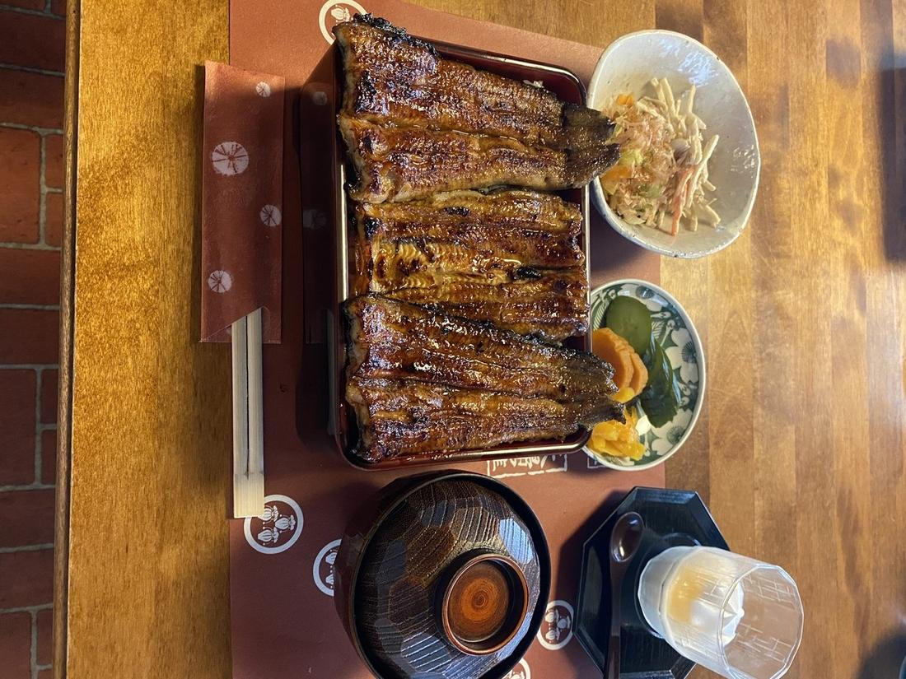
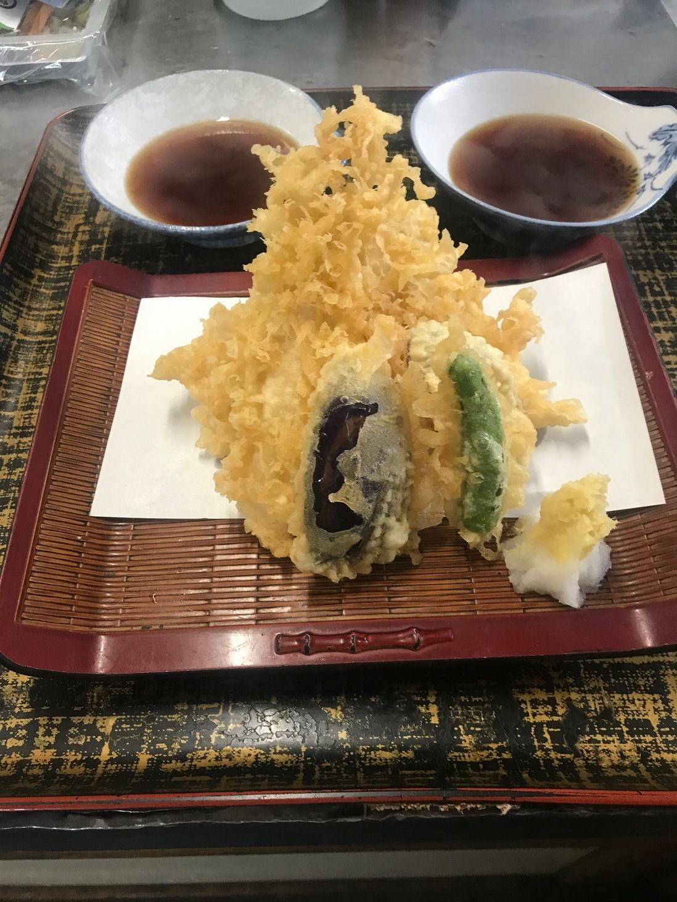
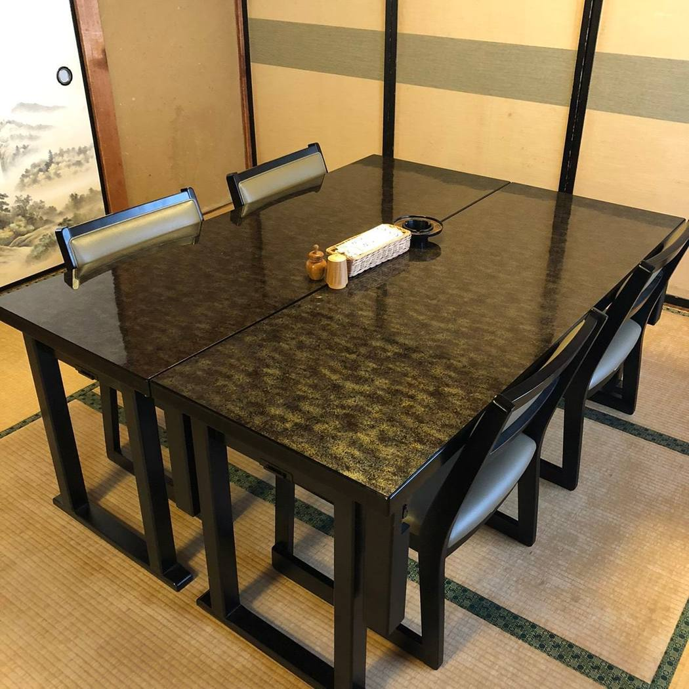
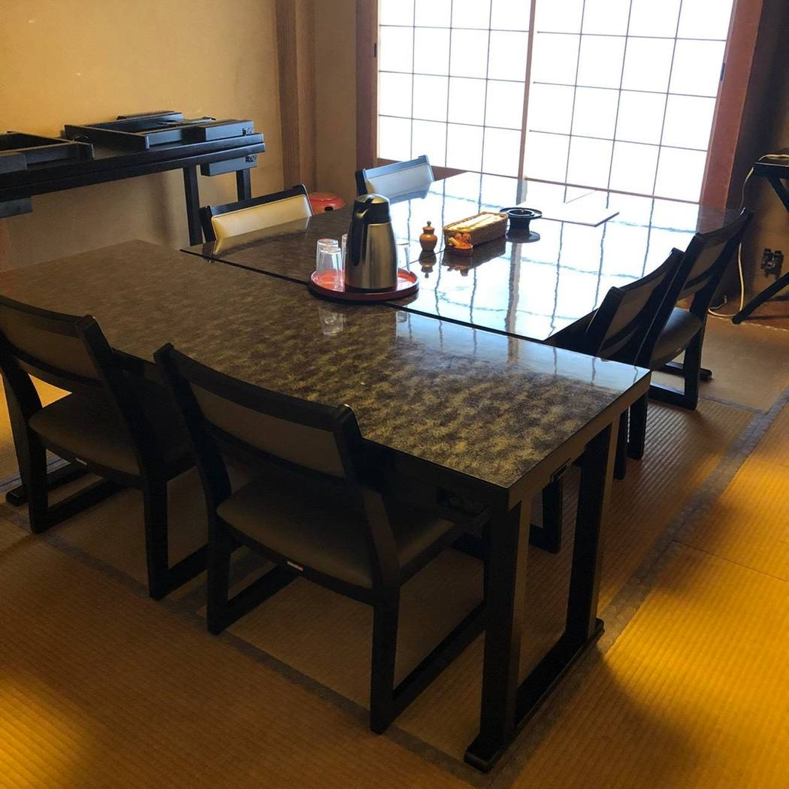
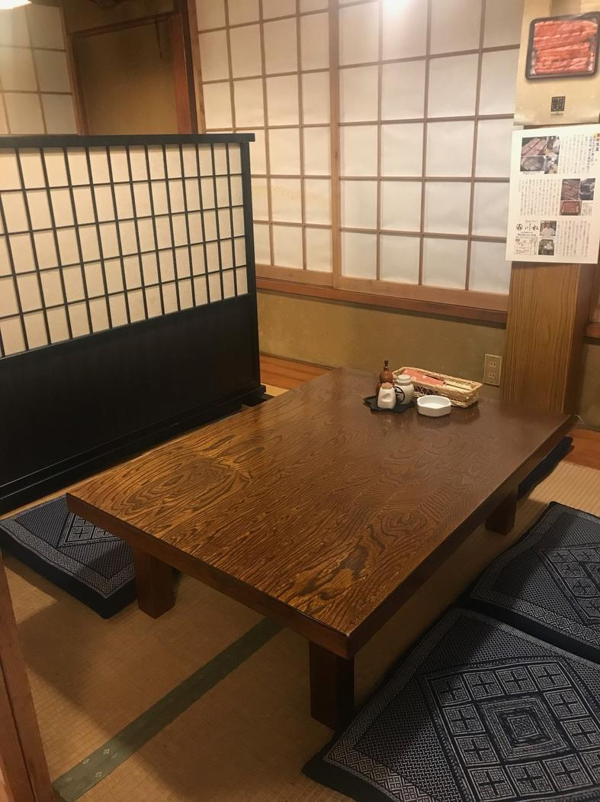
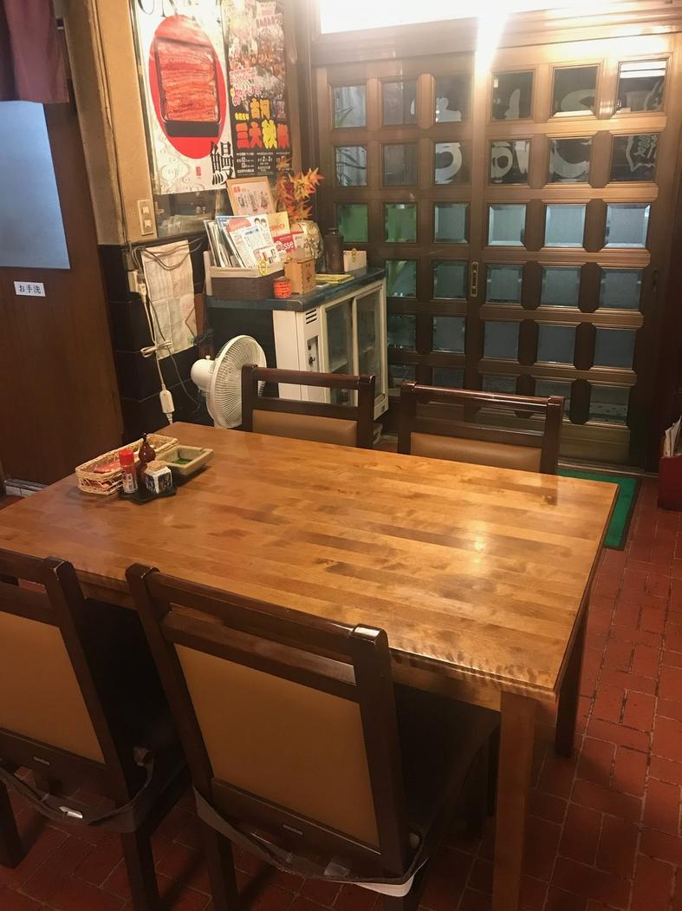
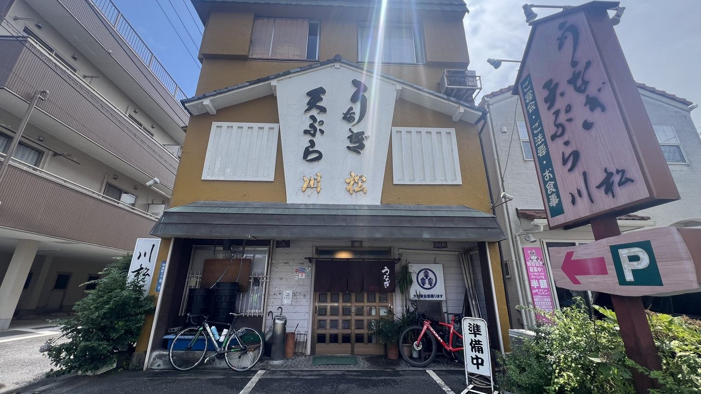

うなぎ 川松
昭和45年から、古河の中央町でうなぎと天ぷらをお出ししております。親子二代、さばきから焼きまで。うなぎ料理を日々、真面目につくっております。

うなぎがなくなり次第、早じまいとさせていただきます。お越しの前に、お電話でお確かめくださいませ。
古河の、地の下の水に当てて。
厳選した国産うなぎを、当店の地下水に当ててストレスを抜いてから、一尾ずつ仕上げてまいります。
うなぎは、ご注文をいただいてから裂き、蒸して、焼き上げます。できたての料理を、手間をかけてお客様にお出しする。創業からずっと、この作り方でやってまいりました。そのぶん、焼き上がりまでお時間を頂戴いたします。お時間の決まっているお客様には、ご予約を承っております。お電話にてご相談くださいませ。お待ちのあいだに、肝焼きや古河の地酒などもご用意しております。お席のご希望は、ご予約の際にお申しつけくださいませ。

創業以来引き継いでまいりました、当店だけの独自のタレでお出しするうな重でございます。
当店のお重は、松にはじまり、竹、梅、そして桜。桜がいちばん上という、世間さまとは順の逆の付け方でございます。あわせて、うな丼もご用意しております。お吸物は、肝吸いへの変更も承ります。

素材と揚げたてに、頑なにこだわりぬいた天ぷらでございます。
古河は、利根川と渡良瀬川に囲まれた、川魚の料理が昔からある土地でございます。当店では、なまずの天ぷらもお出ししております。天重や定食のほか、お刺身や、四季折々の日本料理もあわせてご賞味くださいませ。

2階のお席にて、ご法事やお祝い事、ご宴会のお料理を承っております。
2階は襖で仕切ることができますので、ご人数に合わせて、お部屋の広さを自在にご用意いたします。10名様からは、2階をお貸切にてご利用いただけます。コースのお料理は季節と仕入れにより内容が変わりますので、ご予算やお料理のご相談も、お電話にてお気軽にお申しつけください。小さなお子様もご一緒にどうぞ。


1階は座敷とテーブル席、2階はご会食・ご宴会のお席でございます。
家族をメインとした少人数でやっておりますので、お客様との距離の近い、小回りのきくお店でございます。全席禁煙で、お子様連れのお客様もベビーカーのままお入りいただけます。お車は10台分ご用意しております。
2階は椅子とテーブルのお席でございます。1階のお座敷は、お履物をお脱ぎいただきます。椅子のお席もございます。


お持ち帰りを承っております。お電話にてご用命くださいませ。
古河はうなぎを楽しめるお店の多い土地でございます。そのなかで、川松の名前がお客様にとって馴染みのある存在であり続けられますよう、今日も一尾ずつ、真面目につくってまいります。ご来店を心よりお待ちしております。
古河駅の西口から、歩いて10分ほどでございます。
篆刻美術館や古河歴史博物館のほど近くでございます。

うなぎがなくなり次第、その日は早じまいとさせていただきます。火曜のほかにお休みをいただく日もございますので、お越しの前にお電話でお確かめくださいませ。
| 住所 | 〒306-0033 茨城県古河市中央町2-8-63 |
|---|---|
| 電話 | 0280-22-7648 |
| 営業時間 | 11:00〜15:00（L.O. 14:30）／17:00〜20:15（L.O. 19:30） 売り切れじまいあり。お電話でご確認ください。 |
| 定休日 | 火曜日 |
| 席数 | 40席（1階 座敷12席・テーブル8席／2階 20席） |
| 駐車場 | 有／10台（店の前2台・隣のアパート前3台・離れの駐車場5台） |
| お支払い | 現金・各種クレジットカード・電子マネー・QRコード決済 |